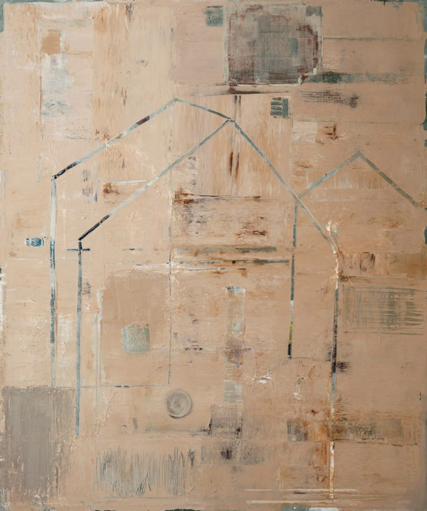

THE JAPANESE ART OF FINDING BEAUTY IN IMPERFECTION
written by The Enso, Apr 22, 2026
There is a bowl in a museum in Kyoto that is worth more than a perfect bowl ever could be. It was dropped. It cracked. And then, instead of being discarded, it was repaired with gold — the cracks filled and sealed with lacquer mixed with powdered gold, silver, or platinum. The repair didn’t hide the damage. It highlighted it. The broken lines became the most beautiful thing about the bowl.This practice is called kintsugi. But the philosophy behind it — the belief that something broken and mended is more interesting, more honest, more alive than something that was never damaged at all — that is wabi-sabi.
And it may be the most misunderstood Japanese concept in the Western world.

Salvatore Balice
What Wabi-Sabi Actually Means
In English, wabi-sabi is often described as “finding beauty in imperfection.” That’s true, but it’s incomplete — like describing music as “organized noise.”
The term combines two separate words:
Wabi (侘び) — the beauty of simplicity, rusticity, and solitude. The feeling of a worn wooden table. A single flower in an unadorned vase. The quiet of an empty room in the early morning.
Sabi (寂び) — the beauty of age, impermanence, and the passage of time. The patina on old copper. The way a stone path becomes more beautiful as moss grows between the cracks. The faded ink of a letter written decades ago.
Together, wabi-sabi is a way of seeing — a lens through which the impermanent, the incomplete, and the imperfect become not sources of anxiety, but sources of beauty.
It is rooted in three Buddhist concepts: anicca (impermanence), dukkha (suffering), and anatta (emptiness). In other words: nothing lasts, nothing is finished, and nothing is perfect. Wabi-sabi doesn’t fight these truths. It rests in them.
What the Western Version Gets Wrong
I’ve watched wabi-sabi become a design aesthetic in the West over the past decade. Linen napkins. Uneven ceramic mugs. Raw-edge wooden shelves. Instagram feeds with intentionally muted tones and “organic” textures.
None of this is wrong, exactly. But it misses the point.
Wabi-sabi isn’t a style. It’s not something you buy or arrange or photograph. It’s a relationship with time — specifically, an acceptance of the fact that things age, wear, and eventually disappear, and that this process is not a problem to be solved but a truth to be appreciated.
The difference matters. A mass-produced “wabi-sabi” ceramic mug made to look imperfect is the opposite of wabi-sabi. Wabi-sabi is your grandmother’s actual mug — the one with the chip on the rim from the time it fell in 1987, that she kept using for thirty more years because it still held tea perfectly well.
One is an aesthetic. The other is a life.
Growing Up with Wabi-Sabi
I didn’t learn wabi-sabi as a concept until I was an adult. But I grew up surrounded by it.
The wooden floors in my childhood home were worn smooth in the places where we walked most often — in front of the sink, at the threshold between rooms, at the foot of the stairs. My mother never replaced them. She called those worn patches aji — flavor. Evidence of a life lived in a place.
The garden had a stone lantern that had been there longer than anyone could remember. Moss had colonized the base entirely. Lichen had turned the stone a dozen shades of grey and green. My grandfather spent an afternoon every spring carefully cleaning everything in the garden — except the lantern. “It’s finally becoming itself,” he said once. I didn’t understand what he meant until much later. These weren’t philosophical statements. They were simply the way things were — a quiet, habitual appreciation for objects and places that had been shaped by time.
Why This Is Difficult for Modern Life
Wabi-sabi runs directly against the logic of consumer culture, which is built on the premise that newer is better, that wear is failure, and that the ideal state of any object is the moment it leaves the factory.
Consider these numbers: The average American buys 65 garments per year and keeps each piece of clothing for an average of 3.3 years (McKinsey & Company, 2022). Global furniture replacement cycles have shortened from an average of 20 years in 1980 to under 7 years today (Ellen MacArthur Foundation, 2021). We are living in the most anti-wabi-sabi moment in human history.
The cost isn’t just environmental, though it is that too. The cost is psychological. When nothing is allowed to age, when wear is always replaced with new, we lose the experience of watching something become. We lose the particular satisfaction of using a knife sharpened so many times that the blade has narrowed, or wearing a jacket whose leather has shaped itself to your movements over years of use.
We also lose, quietly, our tolerance for our own imperfection — for our own aging, our own wear, our own incompleteness.
Three Ways to Practice Wabi-Sabi Today
Wabi-sabi is not a practice in the sense of a routine. It’s a shift in attention. Here are three ways to begin:
1. Notice what has aged well around you
Pick one object in your home that is old and worn. Look at it carefully — not despite its wear, but because of it. What does the wear tell you about how it was used? What does it carry that a new object couldn’t?
2. Resist one replacement
The next time you feel the impulse to replace something because it’s worn, scratched, or outdated — pause. Ask: does it still function? Is the wear actually damage, or is it just evidence of time? Sometimes the answer is still yes, replace it. But sometimes you’ll find the worn thing is already the better thing.
3. Let one thing be unfinished
Wabi-sabi includes the beauty of incompleteness. A garden doesn’t need to be finished to be beautiful. A project doesn’t need to be perfect to be shared. Practice sitting with something unresolved — not to fix it, but to see what it looks like as it is.

The Bowl That Is Worth More Broken
I want to return to that bowl in Kyoto.
What makes it valuable isn’t the gold. It’s the decision someone made — probably centuries ago — not to throw it away. To say: this thing has been damaged, and that damage is now part of its story, and its story is worth preserving.
That decision is wabi-sabi.
Not the aesthetic of imperfection. The choice to stay with something through its imperfection, and to find that staying has made it more beautiful than it was before it broke.
That’s harder than buying a new bowl. And it’s worth considerably more.